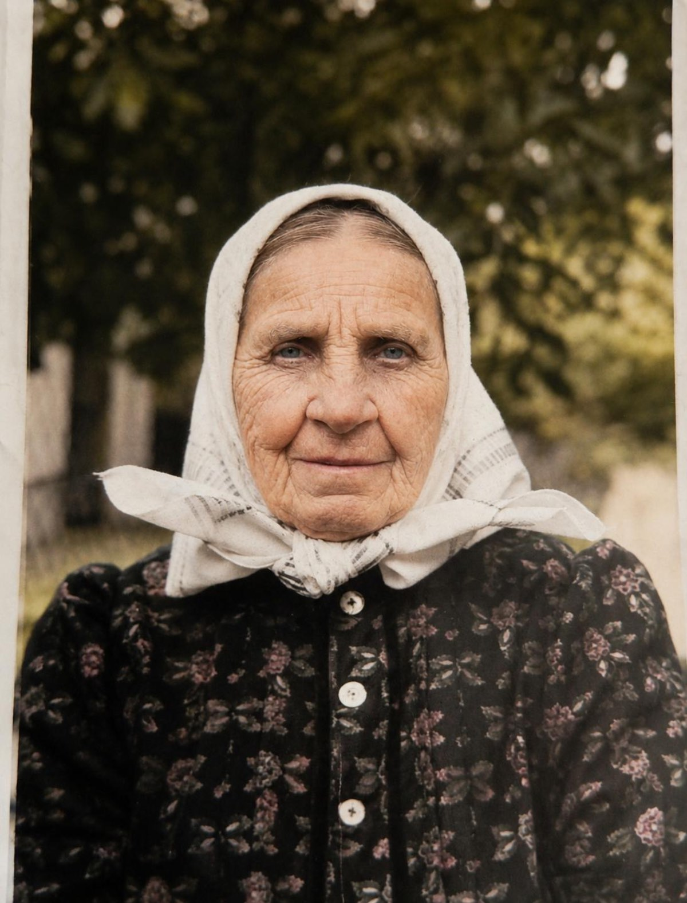
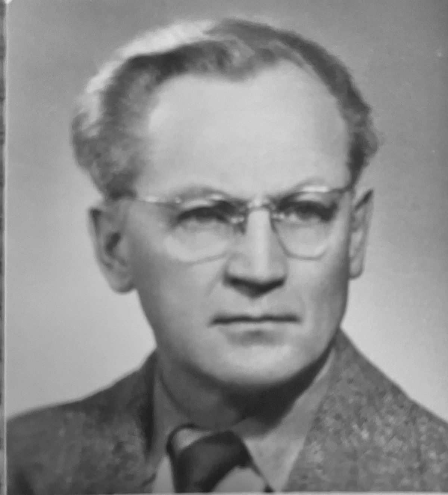
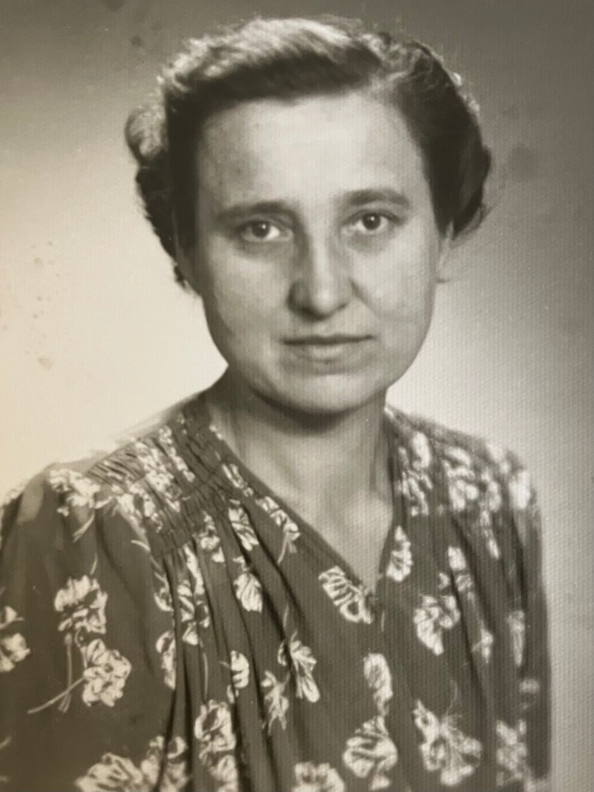

Rodina
Novotných a Slavíkova
Místo, kde zůstávají vzpomínky na ty, kdo tu s námi byli — jejich životy, práce a to, co měli rádi.

Marie Hušková
1887 – 1974

Alois Novotný
1909 – 1990

Jan Slavík
1919 – 1995

Marie Novotná
1909 – 1996
Františka Slavíková
1919 – 2005

Ing. Milan Novotný
1937 – 2023
Věra Novotná
1942 – 2026